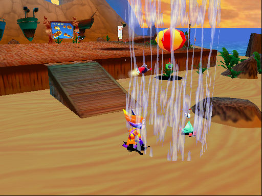

名稱：星球鋼彈／太空馬戲團 (Starshot: Space Circus Fever，英文版) 簡介：Infogrames 1998年出品的動作遊戲，1999年移植至Windows [待補]。  保護：光碟，直接在光碟上執行。 備註：遊戲需要有3dfx。 備註：目前XP以上系統仍有相容性問題，建議在Win9x系統上執行。 備註：進入遊戲後若發現顏色顯示不正確，請離開遊戲，將螢幕模式設成16 bit（65536色）。
